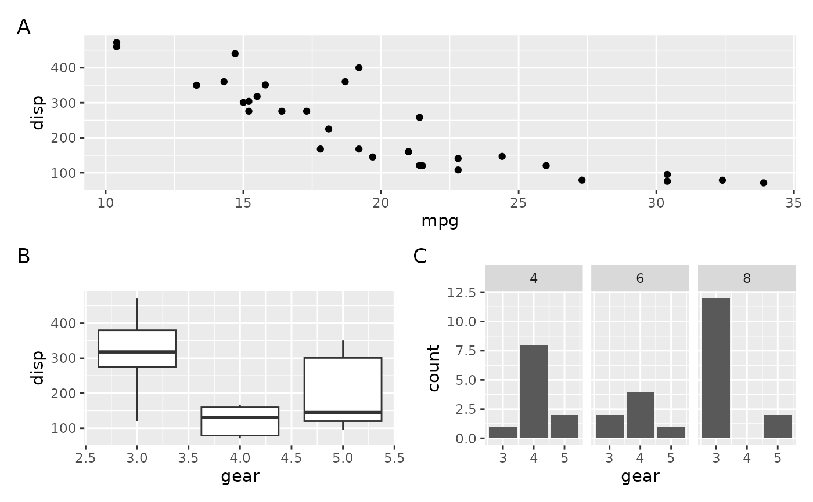
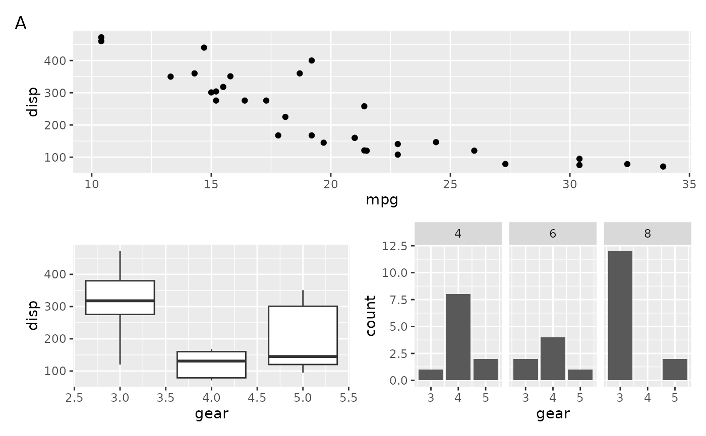
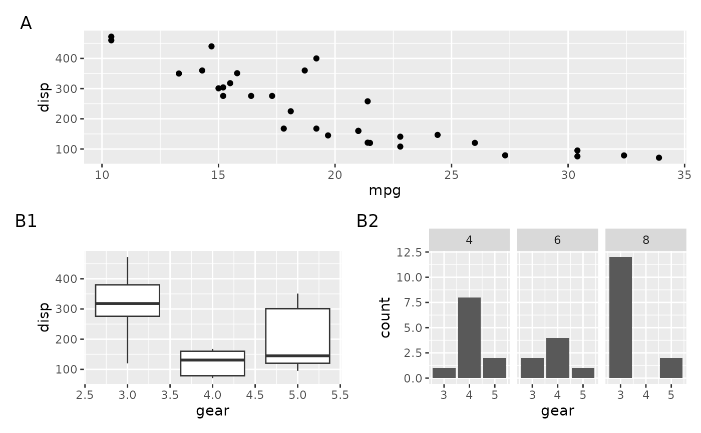
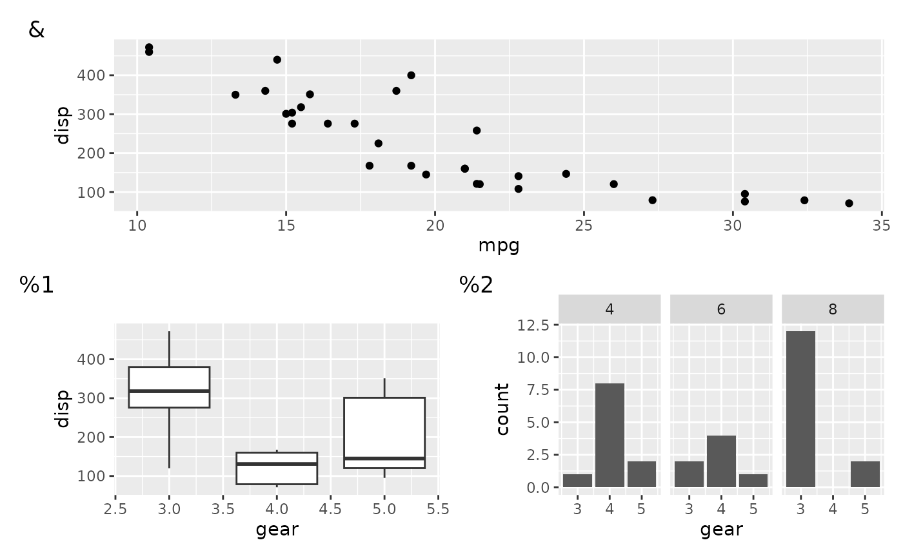

These arguments control how tags (labels) are assigned to plots within a layout, including nested layouts. Tags can be inherited from a parent layout, suppressed entirely, or generated automatically in various sequences. Formatting can be customized with separators, prefixes, and suffixes.
Arguments
Tag templates for plots in the layout. If
waiver()(default), tags are inherited from the parent layout. If there is no parent layout, no tags are applied.If
NULL, tags are suppressed for this layout. In a nested layout, the parent layout's tag is applied to the the entire layout as a single unit.If not
NULL, must be one of:A character vector specifying explicit tags for each plot, or
A single character indicating an auto-generated sequence:
'a': lowercase letters'A': uppercase letters'1': numbers'i': lowercase Roman numerals'I': uppercase Roman numerals
When a parent layout exists, each plot's tag is prefixed with the parent tag and separated by
sep.- sep
Separator between the parent tag (without its own
prefixandsuffix) and the current tag.- prefix
String prepended to the tag.
- suffix
String appended to the tag.
Details
The appearance of tags is controlled by the plot.tag, plot.tag.position,
and plot.tag.location theme elements. Tag styling is first retrieved from
the plot's theme; if not found there, the layout's theme is used.
Examples
p1 <- ggplot(mtcars) +
geom_point(aes(mpg, disp))
p2 <- ggplot(mtcars) +
geom_boxplot(aes(gear, disp, group = gear))
p3 <- ggplot(mtcars) +
geom_bar(aes(gear)) +
facet_wrap(~cyl)
# Add tags to plots, by default the plot in nested layout will get own tag
align_plots(p1, align_plots(p2, p3), ncol = 1) + layout_tags("A")

# Treat a nested layout as a single plot by disabling its internal tags
align_plots(p1, align_plots(p2, p3) + layout_tags(NULL), ncol = 1) +
layout_tags("A")

# Apply multilevel tagging — outer layout uses letters, inner layout uses
# numbers
align_plots(
p1,
align_plots(p2, p3) + layout_tags(1),
ncol = 1
) +
layout_tags("A")

# Use a custom tag sequence, possibly mixed with standard sequences
align_plots(
p1,
align_plots(p2, p3) + layout_tags(1),
ncol = 1
) +
layout_tags(c("&", "%"))
